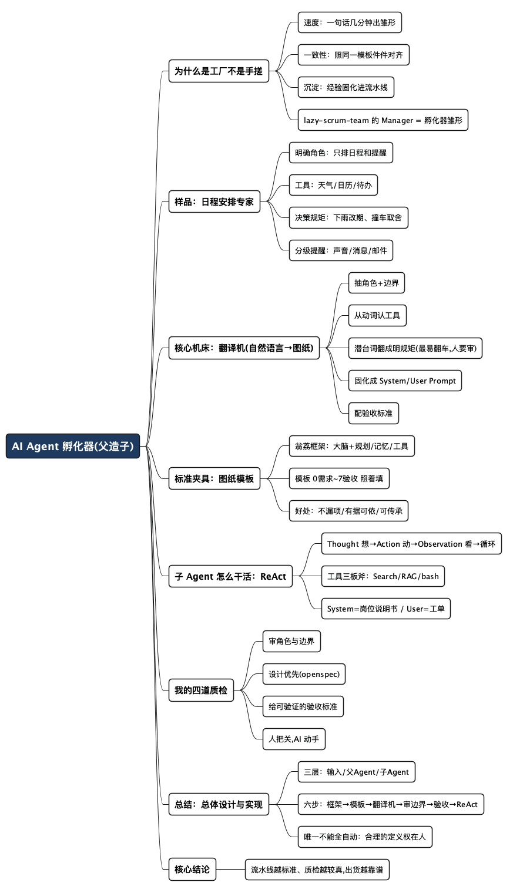

AI Agent 孵化器：用一个父 Agent，批量造出贴身服务的子 Agent
Posted on 三 29 7月 2026 in AI
| Abstract | AI Agent 孵化器：用一个父 Agent，批量造出贴身服务的子 Agent |
|---|---|
| Authors | Walter Fan |
| Category | learning note |
| Version | v2.0 |
| Updated | 2026-07-29 |
| License | CC-BY-NC-ND 4.0 |
AI Agent 孵化器：用一个父 Agent，批量造出贴身服务的子 Agent
前段时间我想给自己攒几个趁手的小工具：一个把博客改成小红书、抖音文案的助手，一个模拟面试官陪我练手的助手，还有一个能像 Scrum 团队一样帮我拆任务、写代码的助手。
一个一个手搓，我搓了几个下来就琢磨：这几个东西的骨架其实长得差不多——都是“听懂一句话 → 配几件工具 → 按规矩干活 → 交付结果”。既然套路一样，那我干嘛一个个捏？能不能造一台机器，我说一句话，它就自动吐出一个贴身的助手来？
这台机器，我姑且叫它 AI Agent 孵化器——说得再直白点，是一座批量制造 AI Agent 的工厂。你走到它跟前，用大白话说出你的需求，它就在流水线上快速孵化出一个专门伺候你这类活儿的子 Agent。
- 先把词说清楚：这里的 Agent 不是科幻片里的机器人，是能听懂你的话、自己调用工具去干活的 AI 程序。
- 父 Agent（孵化器）负责“造 Agent”；子 Agent（被孵化出来的）负责“干具体的活”。
- 这篇的重点，就是讲透这座工厂怎么运转：从一句大白话，到一个能干活的子 Agent，中间那条流水线上到底发生了什么。
为什么是“工厂”，而不是“老师傅手搓”
在讲机器怎么转之前，先说清楚为什么值得造这么一台机器。
手搓一个专业 Agent，就像老师傅手工打一把椅子：能打，也能打好，但慢，而且下一把还得从头来。你要的是三把、五把、十把风格统一的椅子时，手搓就撑不住了。工厂的价值不在“能不能造一个”，而在“能不能又快又稳地造出一批”。
我把两种做法摆一起比一下：
| 维度 | 老师傅手搓 | AI Agent 孵化器 |
|---|---|---|
| 速度 | 一个搓好几天 | 一句话，几分钟出雏形 |
| 一致性 | 全凭手感，件件不同 | 照同一套模板，件件对齐 |
| 门槛 | 得你这个老手全程盯 | 立好流水线，说句话就行 |
| 沉淀 | 经验烂在师傅脑子里 | 经验固化进流水线，可复用可传承 |
最后一条我体会最深。我做 lazy-scrum-team 时立过一个愿景：让它成为一个能自我进化的虚拟团队——一个 Manager 作为父 Agent（超级 Agent），底下的 PO、开发、测试等角色是子 Agent；将来不依赖 Codex、Cursor 这些外部工具，光靠一个 LLM API 就能接活、干活。
那个 Manager，本质上就是一台孵化器的雏形：它听懂一个需求，就把活儿拆开，派生出对应的角色 Agent 去干。父 Agent 造子 Agent 这件事，不是科幻，是我正在自己项目里摸索的东西。
先看一个样品：孵化器吐出的“日程安排专家”
工厂讲原理容易空，咱们先看它产出的一个成品长什么样。假设我走到孵化器跟前，说这么一句：
“帮我做一个日程安排专家：我用大白话告诉它今天要干嘛，它去查天气、看我的日历、翻我的待办清单，然后排出一张日程表，再帮我把提醒设好——重要的用声音，一般的发消息，正式的发邮件。”
一句话说完，孵化器就给我吐出一个子 Agent。拆开看，它由这么几块拼成：
- 一个明确的角色：只管“排日程、设提醒”这一摊，不替我写代码、不陪我聊天。角色一窄，它就不容易跑偏。
- 几件能调用的工具：天气（今天下雨，户外的事往后挪）、日历（哪些时间被占了）、待办（有哪些事等着排）。工具本身早有现成接口，子 Agent 要做的是知道什么时候调哪个。
- 一套决策规矩：这才是“专业”二字的含金量。下雨就提示改户外、两件事撞车紧急的优先、给家人的事别排深夜。这些判断，是你脑子里那套隐性的“老手经验”。
- 分级的提醒方式：重要的响铃、一般的发消息、正式的发邮件——决定它到底“贴不贴心”。
你看，从“一句大白话”到“一个能干活的日程助手”，中间隔着的不是写不完的代码，而是孵化器有没有本事把这几块规矩补齐、补对。接下来就拆这条流水线：这句话是怎么在机器里，一步步变成上面这个成品的。
流水线的核心机床：一台“自然语言 → Agent 图纸”的翻译机
孵化器的心脏，是一台“自然语言 → Agent 图纸”的翻译机（你也可以叫它编译器）。你喂它一句大白话，它把这句话“编译”成一份子 Agent 的完整图纸，车间再照着图纸把成品装配出来。这台翻译机要从你的话里，自动推导出五份图纸：
| 从你的话里 | 翻译机推导出 | 日程专家的例子 |
|---|---|---|
| 你想让它干的那件事 | 角色 + 边界（是谁、不做什么） | “日程安排专家”，只排期设提醒，不写代码不闲聊 |
| 话里的动作（查、看、排、提醒） | 工具清单（要接哪些能力） | 天气、日历、待办、发提醒 |
| 话里的常识和潜台词 | 决策规矩（怎么权衡） | 下雨改户外、撞车按紧急取舍 |
| 上面这些合起来 | 提示词（System + User） | 岗位说明书 + 每次的工单 |
| “算办好了”的标准 | 验收条件（怎么算对） | 下雨的户外事项被正确改期 |
关键在于：这五份图纸，大部分能自动画出来，但不是全自动。 一份一份看它是怎么“编译”出来的，也顺带看清哪几道工序必须你亲自签字。
第一步，抽取意图和角色。 你说“帮我做一个日程安排专家”，翻译机先锁定这是个“排日程”的活儿，给它起名、划定它只干这摊事。这一步做得挺准——你话里的名词（“日程”）和动词（“安排”）已经把角色框死了。
第二步，从动词里认出该配哪些工具。 “查天气、看日历、翻待办、设提醒”，这几个动词直接对应几件工具。翻译机把动词映射成具体能力：“查天气”→ 接天气接口，“设提醒”→ 接系统通知/邮件。这一步也基本自动，因为动词和工具的对应关系很直白。
第三步，把潜台词翻成明规矩——这一步最容易翻车。 你说“排一张合理的日程表”，那个“合理”里藏着一大堆你没说出口的常识：下雨别排户外、别把两件事排在同一个钟点、别半夜给家人发提醒。翻译机会替你补一版默认规矩，但它补的未必是你心里那版。所以这一步必须你来审、来改——它是整条流水线上最不该全自动的工序，也正是你这个“老手”的价值所在。
第四步，把前三步固化成提示词。 角色、工具、规矩凑齐，翻译机把它们写进 System Prompt（那份长期不变的岗位说明书），再留出 User Prompt 的位置接你每次的具体要求。到这儿，子 Agent 的“人格”就成型了。
第五步，配一份验收标准。 光造出来还不够，得能判断它干得对不对。翻译机顺手给几条可检验的场景（“下雨+户外拍摄，应当提示改期”），让新出厂的子 Agent 有个能对答案的靶子。
所谓“孵化器”，本质是一个父 Agent 帮你把一句模糊的话，编译成角色、工具、规矩、提示词、验收这五份明确的图纸，再照图装配出子 Agent。 它能替你打好草稿，但“合理”二字的定义权，始终在你手里。
这一整条“一句话 → 五份图纸 → 质检 → 子 Agent 用 ReAct 干活”的流水线，串起来就是下面这张图：
flowchart LR
U(["用户一句大白话<br/>『做一个日程安排专家…』"])
subgraph PA ["父 Agent（孵化器）：一句话 → 五份图纸"]
direction TB
s1["① 抽意图与角色"]
s2["② 从动词认工具"]
s3["③ 补决策规矩<br/>⚠ 最易翻车，必须人工审改"]
s4["④ 固化成提示词<br/>System + User"]
s5["⑤ 配验收标准"]
s1 --> s2 --> s3 --> s4 --> s5
end
qc{"人工质检<br/>图纸对不对？"}
asm["照五份图纸<br/>装配出子 Agent"]
subgraph SA ["子 Agent：ReAct 边想边做"]
direction LR
r1["Thought 想"] --> r2["Action 动"] --> r3["Observation 看"]
r3 --> rq{"够了？"}
rq -- 否 --> r1
end
fin(["Final：日程表 + 分级提醒 → 交付"])
U --> s1
s5 --> qc
qc -- "不对，打回改 ③" --> s3
qc -- 通过 --> asm --> r1
rq -- 是 --> fin
这台机床把最累的体力活（起名、接线、写模板、搭框架）全包了，只把最需要判断力的那一小块——“到底怎样算合理”——留给你拍板。工厂能批量、能快，但方向盘不能全交给它。
流水线的标准夹具：一份可复用的 Agent 图纸模板
翻译机要“照图装配”，那图纸得有个统一的模子——不然这次画出角色和工具，下次可能漏了记忆、忘了验收，批量生产就成了批量出次品。所以孵化器流水线上最要紧的一件东西，是一份标准化的图纸模板（车间里的“夹具”）。
模板我不打算自己拍脑袋，业界有现成的好东西可以站上去。OpenAI 的翁荔（Lilian Weng）在 《LLM Powered Autonomous Agents》（2023 年）里给过一个被广泛引用的框架：以 LLM 为“大脑”，外挂三大组件——Planning（规划）、Memory（记忆）、Tool use（工具使用）。 用大白话说：
- 大脑（LLM）：负责理解和判断，那个动脑子的核心。
- 规划（Planning）：把大任务拆成小步骤，出错还能回看纠正——后面要讲的 ReAct 就属于这一块。
- 记忆（Memory）：短期记忆是这一轮对话的上下文；长期记忆是“越用越懂你”的部分，通常靠向量库加检索（也就是 RAG）实现。
- 工具（Tool use）：调用外部能力，拿模型自己没有的信息、或者真正动手干活。
这四块拼在一起，就是一个自主 Agent 的标准结构：
flowchart LR
brain(["🧠 LLM 大脑<br/>理解 · 判断 · 决策"])
subgraph P ["规划 Planning"]
p1["子目标分解<br/>（CoT / ReAct）"]
p2["反思与改进<br/>回看 · 纠错重试"]
end
subgraph M ["记忆 Memory"]
m1["短期记忆<br/>本轮上下文"]
m2["长期记忆<br/>向量库 + 检索（RAG）"]
end
subgraph T ["工具使用 Tool Use"]
t1["调用外部 API / 能力<br/>Search · RAG · bash · 天气 · 日历…"]
end
brain --> P
brain --> M
brain --> T
把翁荔这个“大脑 + 三组件”的框架，和前面的“五份图纸”一合，就拼出一份能让孵化器照着填的标准模板。骨架长这样（完整可下载版见文末）：
0. 一句话需求 ← 你的大白话原话
1. 角色与边界 ← 是谁、尤其"不做什么"
2. 大脑与规划 ← 用哪个模型、ReAct、怎么拆任务、何时停
3. 记忆 ← 短期(上下文) / 长期(向量库+RAG)
4. 工具集 ← search / rag / bash + 专属数据源
5. 决策规矩 ← ⚠ 最需要你亲自填的一格
6. 提示词 ← System(岗位说明书) + User(工单)
7. 验收标准 ← 几条能对答案的场景
有了这套夹具，工厂才立得住：
- 件件不漏项。每台出厂的子 Agent 都被逼着走完 0~7，不会这台有记忆、那台忘了验收。
- 父 Agent 有据可依。孵化器照格子填，不用瞎猜你要什么结构，你只管审关键几格。
- 能复用、能传承。做别的 Agent 换个填法就行；给同事，他也照套。老手经验就这么沉淀成一条流水线，而不是烂在谁的脑子里。
我把这份模板整理成了可下载套用的文件，还拿“日程安排专家”做了个填好的范例，见文末。
出厂的子 Agent 怎么干活：ReAct“边想边做”
图纸装配完，子 Agent 出厂了。它拿到一句“帮我安排明天”，得知道什么时候用哪个工具、上一步结果出来后下一步干嘛。这套“边想边做”的章法，业界通行的一种叫 ReAct（Reasoning + Acting，推理 + 行动）。
名字唬人，道理特别朴素。你回想自己排一天日程时脑子怎么转的：
先想一下（“今天有啥要紧事？”）→ 去查一下（翻日历、看天气）→ 看查回来的结果（“哦，下午有雨”）→ 再接着想（“那户外的事得挪”）→ 再做下一步……如此循环，直到事情办妥。
ReAct 就是让子 Agent 照这个节奏来：想一步（Thought）→ 动一步（Action，调工具）→ 看结果（Observation）→ 再想再动，一圈圈转，直到给出最终答案。它不是一口气干完，而是像人一样走一步看一步、根据反馈调整。
flowchart TD
U(["用户：帮我安排一下明天"]) --> t["Thought 想一步<br/>该先查什么？"]
t --> a["Action 动一步<br/>调用工具：天气 / 日历 / 待办…"]
a --> o["Observation 看结果<br/>工具返回：『明天有雨』"]
o --> q{"信息够了？"}
q -- "否，接着转" --> t
q -- 是 --> f(["Final：给出日程表 + 提醒"])
它手里的几件工具
给子 Agent 配工具，不用一步到位，先给够用的这几样。除了日程专家自带的天气、日历、待办，通用的“三板斧”很值得配上：
| 工具 | 干什么用 | 在日程专家里的场景 |
|---|---|---|
| Search（联网搜索） | 查实时、外部信息 | “明天那个展会几点开门？”——日历里没有，得上网查 |
| RAG（知识库检索） | 从你自己的资料里翻答案 | 翻项目文档、会议纪要，知道某个 deadline 是哪天 |
| bash（执行命令） | 真正去“动手”操作系统 | 写日程文件、调系统提醒、发一封邮件 |
| 天气 / 日历 / 待办 | 专属数据源 | 排期的原始素材 |
一句话概括分工：Search 管“外面的世界”，RAG 管“你自己的资料”，bash 管“真去把事办了”。 前两个负责“知道”，最后一个负责“做到”。
两段提示词，定了它的“人格”和“任务”
子 Agent 的行为，很大程度上被两段提示词框住：
- System Prompt（系统提示词）：定“它是谁、守什么规矩”。用户平时看不见，是孵化器给它立的“家法”。骨架大致长这样：
```text 你是一个“日程安排专家”。你的职责是：根据用户的自然语言， 查询天气、日历、待办，排出一张合理的日程表，并设置分级提醒。
可用工具：weather / calendar / todo / search / rag / bash
工作方式（ReAct）： - 每一步先输出 Thought（你的思考），再输出 Action（要调用的工具和参数） - 我会把工具结果作为 Observation 返回给你 - 信息够了就输出 Final Answer：一张日程表 + 提醒设置
规矩（边界）： - 户外活动遇到下雨/高温，必须提示改期，不许硬排 - 两件事时间冲突时，按紧急程度取舍，并说明理由 - 不安排深夜打扰家人的提醒 - 拿不准的时间，先查证，不许瞎编 ```
- User Prompt（用户提示词）：就是用户当场说的那句大白话，比如“帮我把明天安排一下，上午想去拍个外景，下午 3 点和客户有个会”。它负责“这一次要干的具体活儿”。
System Prompt 是长期不变的“岗位说明书”，User Prompt 是每次不同的“工单”。两者一配，子 Agent 既有稳定的分寸，又能应对千变万化的具体需求。
（这一节只讲了大致骨架和思路，能真正跑起来的完整代码——工具怎么定义、ReAct 循环怎么写、prompt 怎么调——我打算之后单开一篇细讲。）
我在这条流水线上的四道质检
孵化器能自动画好五份图纸的草稿，但工厂再自动，也得有质检工位。我总结出四道工序，核心一句话：别急着让它写代码，先花时间把图纸审对。
-
审角色与边界 最容易被跳过、却最要命。我会先让孵化器产出一份“岗位说明书”：这个子 Agent 面向谁、解决什么、边界在哪、输出啥样。日程专家就先钉死它只管排日程和提醒，不顺手帮我回邮件、不越权改待办。以
lazy-rabbit-interviewer为例也一样——一上来就定死只做求职面试，不做心理咨询、不做职业规划。范围一宽，它就飘。 -
设计优先，别一上来就写代码 重要功能，先用 openspec 这类工具走一遍“提案 → 设计 → 拆任务”，再动手。我会直接跟 Codex 说“用 openspec 把任务划分好”，让它先产出设计文档和任务清单，我审改到靠谱了再让它写代码。为什么这么麻烦？AI 写代码飞快，但方向错了它能飞快地把你带沟里。设计阶段多花的十分钟，省的是返工的两小时。
-
给一份“成功长什么样”的标准 Karpathy 有个说法我很认同：给 AI 的任务，最好能变成“可验证的目标”。与其说“帮我加个校验”，不如说“先写针对非法输入的测试，再让它们通过”。放到日程专家上，就是给它几条能对答案的场景：“下雨 + 上午户外拍摄”应提示改期而不是硬排；“两个会议撞在 3 点”应按紧急取舍并说明。配上像样的单元测试，子 Agent 就有明确靶子：跑通了对，跑不通接着改，不用我时时盯着。
-
人来把关，AI 来动手 代码它写、方向我定；草稿它出、取舍我做。就像我写博客——自己搭骨架、定观点，让 AI 扩写润色，但方向盘始终在我手里。做 Agent 也一样：孵化器是那条能干的流水线，可什么该造、造成什么样，得你说了算。 顺便提个我踩过的坑：在
lazy-content-creator里我一度让子进程直接写死["manim", ...]调命令行，结果虚拟环境里的进程找不到这命令，报 FileNotFoundError；改成[sys.executable, "-m", "manim", ...]才好。这类坑，AI 不一定替你预判，得你这个“老手”兜底。
一句话：
别把孵化器当许愿池，把它当成一条能干活、但需要你交代清楚、盯住质检的流水线。 你图纸画得越清楚、验收立得越硬，出厂的子 Agent 就越贴身好用。
总结：孵化器的总体设计与实现
把前面拆开讲的零件拢到一起，一台 AI Agent 孵化器，整体就是三层结构 + 一条流水线。
总体设计（分三层看）：
| 层 | 是谁 | 干什么 | 对应前文 |
|---|---|---|---|
| 输入层 | 你的一句大白话 | 说清要什么、边界在哪 | User Prompt / 一句话需求 |
| 父 Agent 层（孵化器） | 一台"自然语言 → 图纸"的翻译机 | 把话编译成五份图纸，照图装配子 Agent | 核心机床 + 标准模板 |
| 子 Agent 层（产品） | 被孵化出来的专业 Agent | 以 LLM 为大脑，用规划 / 记忆 / 工具，按 ReAct 干活 | 翁荔框架 + ReAct |
三层之间，靠一份标准图纸模板（0 需求 ~ 7 验收）对齐，靠一道人工质检兜底——批量、快，但方向盘不撒手。
实现方法（照这六步落地）：
- 定框架。先认下翁荔那套"大脑 + 规划 / 记忆 / 工具"，作为每个子 Agent 的骨架，别自己另起炉灶。
- 立模板。把框架和"五份图纸"合成一份填空表（角色 / 工具 / 规矩 / 提示词 / 验收），存成可复用文件——这是流水线的标准夹具。
- 接翻译机。让通用 Agent（Codex / Claude Code 等）当父 Agent，读你的话、照模板自动填草稿。
- 补规矩、审边界。人工重点复核第 1 格（角色边界）和第 5 格（决策规矩）——这两格 AI 最容易替你想歪，是整条线上唯一不能全自动的工序。
- 配验收、能自测。给几条能对答案的场景，让出厂的子 Agent 有靶子可打，跑不通就把失败场景喂回去让它自己改。
- 让子 Agent 用 ReAct 跑起来。给它配好工具（search / rag / bash + 专属数据源），按"想一步 → 动一步 → 看结果"循环干活、交付。
一句话记住：框架定骨架，模板保一致，翻译机出草稿，人工守边界，验收兜质量，ReAct 干活。
真要说门道，就集中在第 4 步——"合理"二字的定义权，是这条全自动流水线上，唯一必须留在人手里的东西。
写在最后：合格由人定义
回头看，造这台孵化器，最花时间的不是写代码——那部分现在快得吓人。真正花心思的，是想清楚“我到底要造什么、造到什么程度算合格”。
这活儿说到底，和办一座工厂没两样：流水线越标准、质检越较真，批量出来的东西才越靠得住。 机器再聪明，也替不了你去定义“合格”。
从一个个手搓 Agent，到造一台孵化器批量出 Agent，门槛没你想的那么高。挑一类你反复在做的事，先把那份图纸模板填一遍——你会发现，让父 Agent 替你生子 Agent 这件事，已经比想象中近得多了。
附：模板与参考
- Agent 图纸模板（可下载套用）：AGENT_SPEC_TEMPLATE.txt —— 含“日程安排专家”填好的范例，复制一份改成你自己的即可。
- 框架出处：Lilian Weng（翁荔），《LLM Powered Autonomous Agents》，2023 —— 大脑 + 规划 / 记忆 / 工具 的经典框架。
- ReAct 原始论文：Yao et al., 《ReAct: Synergizing Reasoning and Acting in Language Models》，2022。
全文思维导图
@startmindmap
<style>
mindmapDiagram {
node {
BackgroundColor #F8F9FA
RoundCorner 10
Padding 10
FontSize 13
}
:depth(0) {
BackgroundColor #1E3A5F
FontColor white
FontSize 18
FontStyle bold
}
:depth(1) {
FontSize 15
FontStyle bold
}
:depth(2) {
FontSize 13
}
}
</style>
* AI Agent 孵化器(父造子)
** 为什么是工厂不是手搓
*** 速度：一句话几分钟出雏形
*** 一致性：照同一模板件件对齐
*** 沉淀：经验固化进流水线
*** lazy-scrum-team 的 Manager = 孵化器雏形
** 样品：日程安排专家
*** 明确角色：只排日程和提醒
*** 工具：天气/日历/待办
*** 决策规矩：下雨改期、撞车取舍
*** 分级提醒：声音/消息/邮件
** 核心机床：翻译机(自然语言→图纸)
*** 抽角色+边界
*** 从动词认工具
*** 潜台词翻成明规矩(最易翻车,人要审)
*** 固化成 System/User Prompt
*** 配验收标准
** 标准夹具：图纸模板
*** 翁荔框架：大脑+规划/记忆/工具
*** 模板 0需求~7验收 照着填
*** 好处：不漏项/有据可依/可传承
** 子 Agent 怎么干活：ReAct
*** Thought 想→Action 动→Observation 看→循环
*** 工具三板斧：Search/RAG/bash
*** System=岗位说明书 / User=工单
** 我的四道质检
*** 审角色与边界
*** 设计优先(openspec)
*** 给可验证的验收标准
*** 人把关,AI 动手
** 总结：总体设计与实现
*** 三层：输入/父Agent/子Agent
*** 六步：框架→模板→翻译机→审边界→验收→ReAct
*** 唯一不能全自动：合理的定义权在人
** 核心结论
*** 流水线越标准、质检越较真,出货越靠谱
@endmindmap

本作品采用知识共享署名-非商业性使用-禁止演绎 4.0 国际许可协议进行许可。 欢迎在我的个人网站 https://www.fanyamin.com 访问原文并评论。